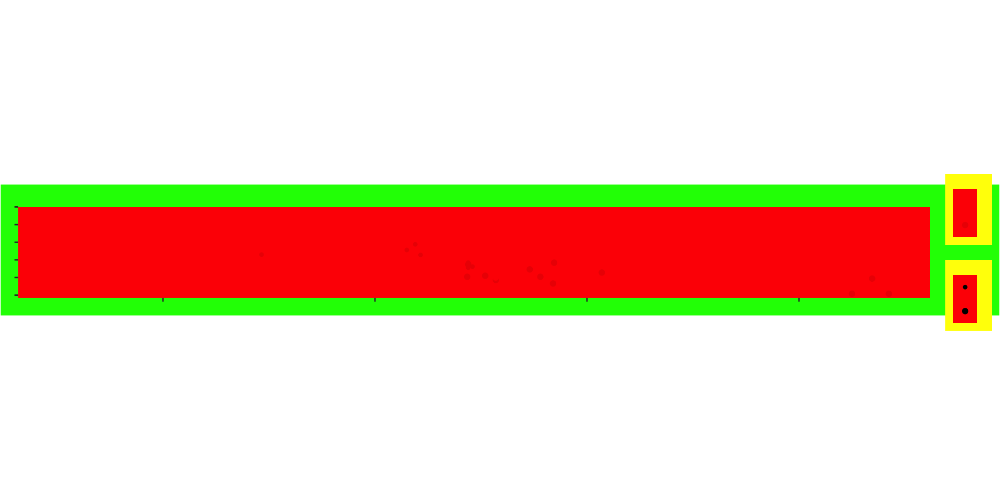
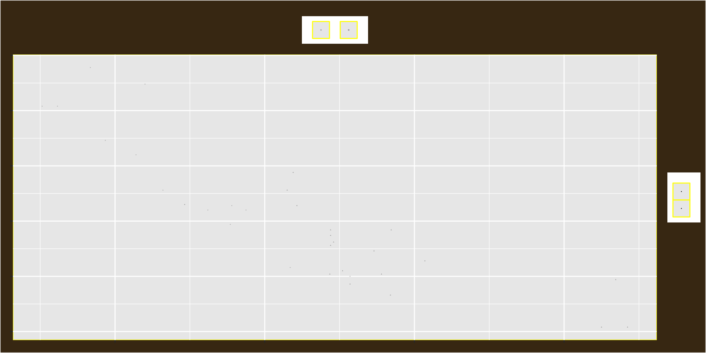
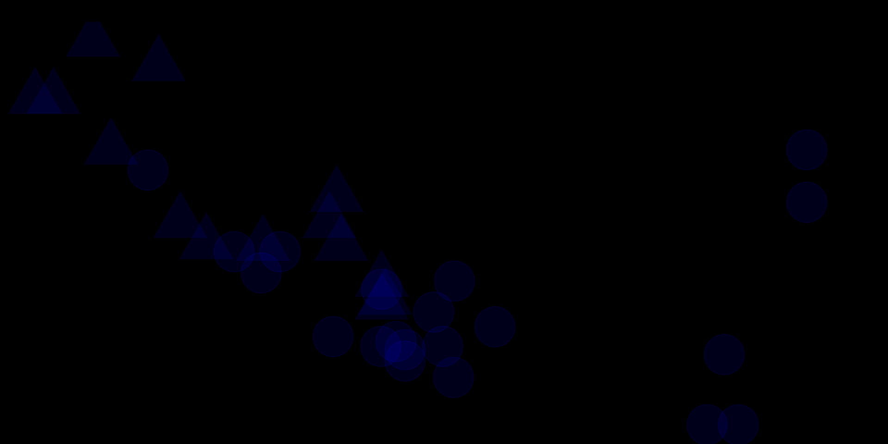
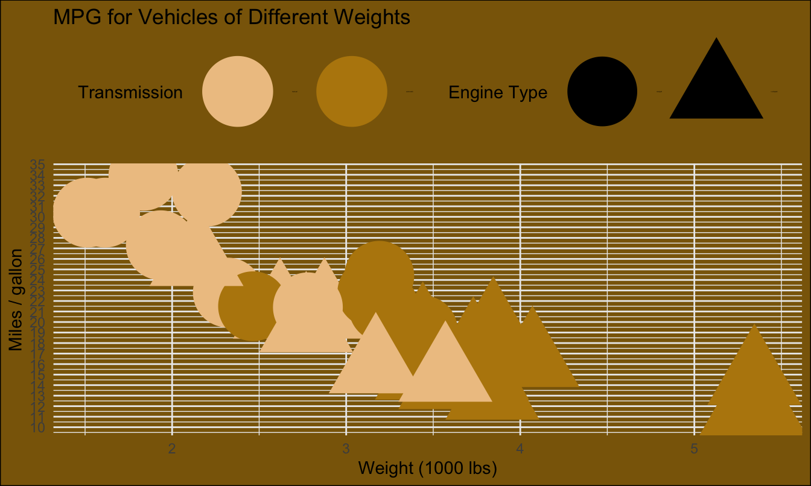

Linear regression with a multiple predictors I
Lecture 16
Warm-up
While you wait…
Go to your
aeproject in RStudio.Make sure all of your changes up to this point are committed and pushed, i.e., there’s nothing left in your Git pane.
Click Pull to get today’s application exercise file: ae-14-modeling-penguins-multi.qmd.
Wait till the you’re prompted to work on the application exercise during class before editing the file.
Announcements
- Project repos closed (you won’t see them on GitHub) until proposal grading is done. You’ll get access back to them on Monday. In the meantime, if you want to work on your project, you can make local commits on RStudio and you’ll be able to push them when you regain access.
- Peer evaluations (via TEAMMATES) are due by Friday, 5 pm.
Goals
Recap modeling with a single predictor
Fit and interpret models with a categorical predictor
Fit and interpret models with multiple predictors
Distinguish between additive and interaction models
Ugly plot awards
Honorable mention 1: Austin Liu
Code
mtcars |>
mutate(
am = case_when(
am == 0 ~ "Automatic",
am == 1 ~ "Manual"
),
vs = case_when(
vs == 0 ~ "V-shaped",
vs == 1 ~ "Straight"
),
am = fct_relevel(am, c("Manual", "Automatic")),
vs = fct_relevel(vs)
) |>
ggplot(aes(x = wt, y = mpg, color = am, shape = vs)) +
geom_point() +
labs(
title = "ggplot2
plot
of
car
weight
in
thousands
of pounds versus
fuel
efficiency in miles per
gallon from thirty-two
automobiles in
the nineteen-seventy-four
Motor Trend United
States magazine
issue",
subtitle = "of cars",
x = "Weight (1000 lbs)",
y = "Miles / gallon",
color = "Transmission",
shape = "Engine configuration"
) +
theme(
legend.position = "right",
plot.background = element_rect(fill = "green"),
legend.background = element_rect(fill = "yellow"),
panel.background = element_rect(fill = "red"),
text = element_text(size = 1, family = "AvantGarde"),
aspect.ratio = 0.1,
panel.grid.major = element_blank(),
panel.grid.minor = element_blank()
) +
scale_color_manual(
values = c("Manual" = "red1", "Automatic" = "red2")
) +
scale_shape_manual(
values = c("V-shaped" = 19, "Straight" = 20)
)
Honorable mention 2: Clarke Campbell
Code
mtcars |>
mutate(trans_type = case_when(
am == 0 ~ "Automatic",
am == 1 ~ "Manual"
)
) |>
mutate(engine_type = case_when(
am == 0 ~ "V-shaped",
am == 1 ~ "Straight"
)
) |>
ggplot(aes(x = wt, y = mpg, color = trans_type, shape = engine_type)) +
geom_point(size = 0.1) +
labs(
x = "Weight (in 1000s of lbs)",
y = "Miles / gallon",
title = "Weight vs. miles per gallon of 32 cars",
subtitle = "from the 1974 Motor Trend US magazine",
color = "Transmission Type:",
shape = "Engine Type"
) +
guides(
color = guide_legend(position = "top"),
shape = guide_legend(position = "right")
) +
scale_color_manual(
values = c(
"Manual" = "grey",
"Automatic" = "darkgrey"
),
breaks = c(
"Manual", "Automatic"
)
) +
theme(
text = element_text(
size = 20,
family = "URWBookman",
face = "italic"),
panel.background = element_rect(colour = 'yellow'),
plot.background = element_rect(fill = "#473417"))
Honorable mention 3: Charlie Pausic
Code
ggplot(mtcars,
aes(x = wt, y = mpg,
color = factor(am), shape = factor(vs)
)
) +
geom_point(size = 15, alpha = 0.1) +
labs(
title = "carssssss",
x = "variable",
y = "other variable",
color = "Transmission",
shape = "Engine Type"
)+
theme_void() +
theme(legend.title = element_text(size = 1),
plot.background = element_rect(fill = "black")
) +
scale_color_manual(
values = c("blue", "blue"),
labels = c("Automatic", "Manual")
) +
scale_shape_manual(
values = c("circle", "triangle"),
labels = c("Straight", "V-shaped")
)
Honorable mention 4: Natalie Veale
Code
mtcars |>
mutate(am = case_when(
am == "0" ~ "automatic",
am == "1" ~ "manual"),
am = factor(am, levels = c("manual", "automatic")),
vs = case_when(
vs == "0" ~ "v-shaped",
vs == "1" ~ "straight")
) |>
ggplot(aes(x = wt, y = mpg, color = am, shape = vs)) +
geom_point(size = 20) +
labs(
x = "Weight (1000 lbs)",
y = "Miles / gallon",
title = "MPG for Vehicles of Different Weights",
color = "Transmission",
shape = "Engine Type"
) +
scale_y_continuous(breaks = seq(0, 50, by = 1)) +
scale_color_manual(values = c(
"automatic" = "darkgoldenrod",
"manual" = "burlywood2"
)
) +
theme_minimal() +
theme(
legend.position = "top",
plot.background = element_rect(fill = "darkgoldenrod4"),
legend.text = element_text(size = 1)
)
Winner: Neha Shukla
Code
library(ggimage)
mtcars_new <- mtcars |>
mutate(
am = if_else(am == 0, "automatic", "manual"),
am = fct_relevel(am, "manual", "automatic")
)
ggplot(
mtcars_new,
aes(x = wt, y = mpg)
) +
labs(
x = "Weight (1000 lbs)",
y = "Miles / gallon",
title = "Car's Mileage per Gallon vs. Car Weight",
subtitle = "Colored by type of transmission",
color = "Transmission",
shape = "Engine"
) +
geom_image(
data = tibble(wt = 3.5, mpg = 25),
aes(image = "images/16/rickroll.png"),
size = 0.8
) +
geom_image(
data = tibble(wt = 2, mpg = 15),
aes(image = "images/16/dino.png"),
size = 0.4
) +
geom_image(
data = tibble(wt = 4, mpg = 25),
aes(image = "images/16/sparkle.png"),
size = 0.4
) +
geom_point(
aes(shape = vs, alpha = wt, color = am),
size = 15
) +
theme_dark() +
theme(
legend.position = "right",
legend.background = element_rect(fill = "green")
) +
scale_color_manual(
values = c(
"manual" = "#b9bbda",
"automatic" = "#6d3617"
)
) +
guides(
shape = guide_legend(override.aes = list(size = 0.2)),
color = guide_legend(override.aes = list(size = 0.2)),
alpha = guide_legend(override.aes = list(size = 0.2))
)Linear regression with a categorical predictor
From last time (with penguins)
A different researcher wants to look at body weight of penguins based on the island they were recorded on. How are the variables involved in this analysis different?
. . .
outcome: body weight (numerical)
predictor: island (categorical)
Visualize body weight vs. island
Determine whether each of the following plot types would be an appropriate choice for visualizing the relationship between body weight and island of penguins.
Scatterplot ❌
Box plot ✅
Violin plot ✅
Density plot ✅
Bar plot ❌
Stacked bar plot ❌
Visualize
Visualize the relationship between body weight and island of penguins. Also calculate the average body weight per island.
Model - fit
Fit a linear regression model predicting body weight from island and display the results. Why is Biscoe not on the output?
Model - interpret
\[ \widehat{body~mass} = 4716 - 1003 \times islandDream - 1010 \times islandTorgersen \]
Intercept: Penguins from Biscoe island are expected to weigh, on average, 4,716 grams.
Slope - islandDream: Penguins from Dream island are expected to weigh, on average, 1,003 grams less than those from Biscoe island.
Slope - islandTorgersen: Penguins from Torgersen island are expected to weigh, on average, 1,010 grams less than those from Biscoe island.
Model - predict
What is the predicted body weight of a penguin on Biscoe island? What are the estimated body weights of penguins on Dream and Torgersen islands? Where have we seen these values before?
Model - predict
Calculate the predicted body weights of penguins on Biscoe, Dream, and Torgersen islands by hand.
\[ \widehat{body~mass} = 4716 - 1003 \times islandDream - 1010 \times islandTorgersen \]
. . .
- Biscoe: \(\widehat{body~mass} = 4716 - 1003 \times 0 - 1010 \times 0 = 4716\)
. . .
- Dream: \(\widehat{body~mass} = 4716 - 1003 \times 1 - 1010 \times 0 = 3713\)
. . .
- Torgersen: \(\widehat{body~mass} = 4716 - 1003 \times 0 - 1010 \times 1 = 3706\)
Models with categorical predictors
When the categorical predictor has many levels, they’re encoded to dummy variables.
The first level of the categorical variable is the baseline level. In a model with one categorical predictor, the intercept is the predicted value of the outcome for the baseline level (x = 0).
Each slope coefficient describes the difference between the predicted value of the outcome for that level of the categorical variable compared to the baseline level.